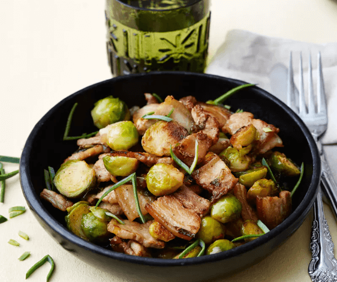

Schweinebauch mit Rosenkohl
(20 Min, 11 Port., F: 29g, K: 3g, E: 13g)

Zutaten
- 500 g Schweinebauch, 2 TL Sojasauce, 1 TL Reisessig, 2 Knoblauchzehen, 50 g Butter, 500 g Rosenkohl, 1/2 Lauch, Salz & Pfeffer
Zubereitung
- Rosenkohl waschen und, je nach Vorliebe, halbieren oder vierteln. Knoblauch fein hacken. Schweinebauch in mundgerechte Stücke schneiden.
- Schweinebauch in eine Pfanne geben und goldbraun anbraten.
- Knoblauch, Rosenkohl und Butter zur Pfanne dazugeben und anbraten bis der Rosenkohl beginnt braun zu werden.
- Sojasauce und Reisessig vermischen und dazugeben. Mit Salz und Pfeffer abschmecken.
Originalrezept unter: Dietdoctor.com